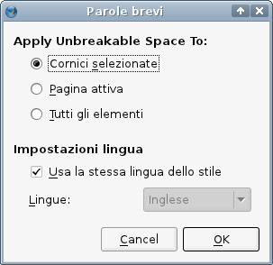

“Parole brevi” è un plugin che inserisce spazi protetti (detti anche spazi non divisibili) prima o dopo certe abbreviazioni, ad esempio tra “25” e “km” o tra “Dott.” e “Pittman”, per evitare che i due termini siano separati da un ritorno a capo.
Gli sviluppatori di Scribus non possono applicare tutte le diverse regole nazionali o specifiche di ciascuna lingua, ma uno di essi, Petr Vaněk, ha deciso di creare un plugin che può essere facilmente personalizzato dagli utenti per soddisfare le loro particolari necessità.
Il plugin “Parole brevi” si trova in Utilità > Parole brevi nella barra dei menù.
|  |
La finestra di dialogo “Parole brevi” comprende due parti. Le opzioni nella parte superiore (“Applica spazio protetto su;”) permettono di scegliere a quali parti del documento saranno applicati gli spazi protetti:
La parte inferiore (“Impostazioni lingua”) sembra più semplice, ma concettualmente è un po' più complicata. L'impostazione predefinita (”Usa la stessa lingua dello stile”) significa che Scribus userà o le impostazioni della lingua di sistema, o le impostazioni della lingua di Scribus, o le impostazioni della lingua di un certo stile, e il successivo prevale sempre sul precedente. Se disabilitate l'impostazione predefinita, potete far sì che Scribus appliche le mregole di una lingua diversa, ma (così come per le impostazioni di sistema, di Scribus e di stile) Scribus deve avere a disposizione le informazioni corrette sulla lingua che volete utilizzare. Se per una certa lingua non esiste una configurazione, dovrete crearla.
il plugin Parole Brevi utilizza un file di configurazione globale chiamato scribus-short-words.rc, che di solito si trova nella directory $prefix/lib/scribus/plugins (la directory effettiva può essere diversa, a seconda del sistema operativo e/o della posizione in cui Scribus è stato installato dalla vostra distribuzione o da voi). La struttura del file di configurazione è piuttosto semplice e non ha bisogno di molte spiegazioni: contiene un elenco di abbreviazioni per una data lingua, precedute o seguite da uno spazio e separate da virgole. La posizione dello spazio, prima o dopo un'abbreviazione, indica al plugin dove lo spazio protetto deve essere inserito. Ciascuna riga contenente le impostazioni deve iniziare con l'indicazione della lingua a cui si riferisce, quindi ad esempio en per l'inglese o cs per il ceco:
# English starts here en=Dr. ,Dr ,Mr. ,Mr ,Mrs. ,Mrs ,Ms. ,Ms ,Prof. ,Prof ,Rev. ,Rev , en= Kg, kg, g, mg, oz, lb, cwt, km, Km, m, cm, mm, # Czech starts here ## hanging conjunctions cs=K ,k ,S ,s ,V ,v ,Z ,z ,O ,o ,U ,u ,I ,i ,A , ## physics and math cs= kg, g, m, cm, mm, l, hl, s, %,
Se volete usare “Parole brevi” personalizzate, ad esempio per una nuova lingua, potete creare una vostra configurazione con i dati appropriati e aggiungere il contenuto facendo copia-e-incolla nel file scribus-short-words.rc nella cartella .scribus nella vostra directory home/utente. Potete anche inserire la vostra configurazione direttamente nelle Preferenze di Scribus.
Gli sviluppatori di Scribus desiderano accrescere il file di configurazione globale per soddisfare le necessità degli utenti del maggior numero di lingue possibile. Se avete creato un file di configurazione affidabile per la vostra lingua, saremo felici di distribuirlo con Scribus, in modo che il vostro lavoro possa essere utilizzato e migliorato da altri utenti.